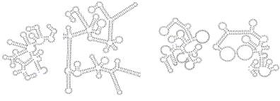

|
Alain Denise[1], Yann Ponty1, Michel Termier[2]
Keywords: random sequences, random generation, context-free grammars, RNA structures
1 Introduction
Random sequences are very useful in bioinformatics. According to a very powerful paradigm, they represent the “background noise” from which the actual biological information must differentiate. For example, random sequences are widely used in order to detect over- and under-represented motifs, or to determine whether scores of pairwise alignments are relevant. Analytic approaches do exist for these kinds of problems. But, for the most complex cases, experimental approach (i.e. in silico generation of random sequences) is still necessary.
Random sequences must obey to a model that takes into account some relevant properties of actual sequences. Usually, the model is based on statistical parameters only: the numbers of occurrences of oligomers in a given biological sequence lead to the parameters of a Markovian model. Our aim is to enrich these classical models by adding structural parameters. Comparing biological sequences to such more “realistic” random sequences may help to discover more refined biological properties.
We present a methodology and a software, GenRGenS, for generating genomic sequences and structures, which obey both to statistical and syntaxic (grammatical) parameters. In section 2, we briefly describe an algorithm which generates random words of a context-free language according to a given probability distribution. In section 3, we illustrate the method by applying it to basic RNA secondary structures, using the GenRGenS software.
2 Random generation of words of context-free languages
The problem of generating uniformly at random combinatorial structures, and particularly words of context-free languages, has been widely studied by computer scientists. Regarding context-free languages, the problem is the following: find an algorithm which, given an integer n and a non ambiguous grammar G of a context-free language L, generates random words of length n of L, so that they appear with equal probability. The method consists in drawing a sequence of derivations from the axiom of G to a word of length n, as follows: at each step of the algorithm, take a non-terminal symbol of the word being generated and rewrite it according to a rule of G, chosen with a suitable probability. The key point is the computation of this probability: for the generation to be uniform on words of length n, it must depend on the context, i.e. on the length of the word being generated and on the non-terminal symbols that it contains. The best algorithms, which are based on this crude general scheme, generate a word in O(n log n) arithmetic operations in the worst case [2].
The problem we address here is more general. Two of the authors, together with Olivier Roques, have given in [1] the principles of a method for generating words according to a given probability distribution on the number of occurrences of letters. Suppose that the language L is on the alphabet A={a1, a2, …, ak}, and let v=(v1, v2, …, vk) a vector of positive real number whose sum equals 1. The problem is to generate random words of L of given length n, in such a way that (i) for any i, the average proportion of letter ai in the words equals vi , (ii) any word has a positive probability to be generated, and (iii) two words having the same distribution of letters have the same probability to be generated. In [1], we attack the problem by assigning to each letter a weight, and defining the weight of a word as the product of the weights of its letters. The generation algorithm is such that the probability of any word is proportional to its weight. (The uniform generation scheme is the particular case where all the weights are equal.) The main difficulty is to determine the suitable weights in order to get the desired distribution of letters. This is partially solved in [1], by using a generating series approach.
3 RNA secondary structures generated with GenRGenS
GenRGenS (for Generation of Random Genomic Sequences) is a program which implements the concepts just presented, and other more classical ones. Source and executable files (in Java) can be freely downloaded at the following address: http://www.lri.fr/~denise/GenRGenS.
Context-free grammars can describe a number of classical constraints, as, for example, the presence of particular motifs in sequences. They can also express long-range interactions, as pairings in RNA. Secondary structures without pseudoknots can be encoded by words of a context-free language [3,4] given by the grammar: M à aMbM | cM | e. The a’s and b’s code for the paired nucleotides, the c’s for the unpaired ones. In order to get “realistic” random secondary structures, one can modify this simple grammar and add some statistical parameters by assigning weights to letters. As an example, the four structures of Figure 1 obey to a simple variant of the above grammar. The first two are generated uniformly, while the last two are subject to a weight which reduces the average number of loops (and, consequently, increases the length of each loop).
|  |
Figure 1: Random RNA secondary structures (generated with GenRGenS and drawn with RNAViz).
[1] Denise, A., Roques, O. and Termier, M. 2000. Random generation of words of context-free languages according to the frequencies of letters. In Gardy, D. and Mokkadem, A., editors, Mathematics and Computer Science: Algorithms, Trees, Combinatorics and Probabilities. Trends in Mathematics, Birkhaüser pp.113-125. Preliminary version available at http://www.lri.fr/~denise/publications/NonUnifRandGen.ps
[2] Flajolet, Ph., Zimmermann, P. and Van Cutsem, B. 1994. A calculus for the random generation of labeled combinatorial structures. Theoretical Computer Science 132:1-35.
[3] Searls, D.B. Formal language theory and biological macromolecules, 1999. Series in Discrete Mathematics and Theoretical Computer Science 47:117-140.
[4] Vauchaussade de Chaumont, M. and Viennot, X.G 1985. Enumeration of RNA’s secondary structures by complexity. In Capasso, D., Grosso, E. and Paven-Fontana, S.L., editors, Mathematics in Medicine and Biology, Lecture Notes in Biomathematics vol. 57 pp. 360-365.
[1] Laboratoire de Recherche en Informatique (LRI), UMR CNRS 8623, bât. 490, Université Paris-Sud, F91405 Orsay cedex, France. E‑mail: [Alain.Denise, Yann.Ponty]@lri.fr
[2] Institut de Génétique et Microbiologie (IGM), UMR CNRS 8621, bât. 400, Université Paris-Sud, F91405 Orsay cedex, France. E‑mail: termier@igmors.u-psud.fr